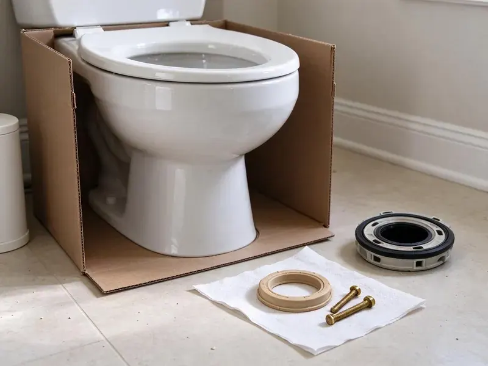

Toilet Bowl Replacement in Commerce City, CO
A cracked bowl can leak without warning. GFR Plumbing sets a matching bowl in Commerce City, CO on a fresh seal.
- New Seals and Bolts
- No Hidden Fees
- Licensed Plumbers
- Matched Bowls
Local Toilet Bowl Replacement in Commerce City, CO
Call (720) 727-9398 with your model number and we will check for a matching bowl.
Cracked Bowl Replacement for Commerce City, CO Homes
GFR Plumbing replaces cracked, chipped and stained toilet bowls across Commerce City, CO, keeping your existing tank when it is in good shape and still matches. The model gets identified, the bowl gets sourced, and it goes in on a fresh seal. New tank bolts are included. The work follows plumbing code for Colorado.
Our expertise includes:
- Installs done to plumbing code
- Bowl removal and haul-away
- Level setting and even bolt torque

Additional Bathroom Plumbing Services in Commerce City, CO
From toilets to showers, our bathroom plumbing team in Commerce City, CO repairs, installs, and replaces every fixture with clean, code-compliant work.


Customers
Why Choose GFR Plumbing for Toilet Bowl Replacement in Commerce City, CO?
Clean work matters on a job like this, because a bowl swap involves draining water, lifting porcelain and scraping old wax off your floor. We cover the floor before starting. We leave the bathroom dry and the old bowl on our truck.
- Fresh Seals, Every swap gets a new floor seal and tank gasket.
- Model Matching, We confirm the bowl fits your tank, rough-in and bolt spacing before ordering.
- Clear Estimates, Bowl-only and full replacement are priced together.
Citywide Coverage
We replace toilet bowls in every part of Commerce City, from guest baths in older houses to main suites in newer subdivisions with one-piece toilets. Pricing is the same everywhere. Most addresses pay no extra trip charge.
Experienced Team
The GFR Plumbing crew is licensed and insured, and every plumber has set enough bowls to snug closet bolts by feel without cracking new porcelain. It is a skill that takes time. Until they have it down, newer techs work alongside a senior plumber.
Safety-First Approach
Cracked porcelain is sharp enough to cut through gloves, so we lift damaged bowls carefully, wrap the pieces and carry them out instead of breaking them up in the room. We cover the floor before lifting anything. Before we leave, the floor is mopped and dried so nobody slips.
Trusted Certified Commerce City Plumbing Services Professionals
At GFR Plumbing, we take pride in licensed, certified plumbing services throughout Commerce City, CO. Those papers on the wall mean something. Our plumbers hold recognized industry credentials, and they follow strict safety and quality rules on every repair, installation and maintenance call we run.
Call Us Now PHCC Plumbing Contractor Recognition
PHCC Plumbing Contractor Recognition Better Business Bureau (BBB) Accreditation
Better Business Bureau (BBB) Accreditation Angi Certified Pro
Angi Certified Pro ISO 9001 Quality Management Certification
ISO 9001 Quality Management CertificationToilet Bowl Replacement Work in Commerce City, CO
Toilet Bowl Replacement for Older Homes in Commerce City, CO
Houses built before the 1970s often have a lead closet bend or a cast iron flange caulked with oakum, and those need gentle handling when the bowl comes off. Old cast iron can crack if you pry on it. We avoid prying on the flange and use repair rings or flange adapters made for cast iron, so the drain stays intact.

Cracked or Damaged Toilet Bowl Replacement in Commerce City
Porcelain that cracks below the waterline leaks every time the bowl refills, and the water usually runs down inside the base where you will not see it for weeks. Even a thin crack will leak. The bowl comes up so we can look at the flange and subfloor, then set a matching bowl on a fresh seal.
Old Toilet Upgrades in Commerce City, CO
Bowls from before 1994 were built for 3.5 gallon flushes or more, and pairing one with a new low-flow tank does not work because the trapway and rim are sized for the larger volume. Bowl and tank have to match. Upgrading an old toilet usually means replacing both, and we will price it that way.
Flange Repair and Toilet Reset in Commerce City, CO
A wobble at the base usually means the bowl has been rocking on a loose or broken flange, and every rock breaks the wax seal a little more. Old cast iron flanges tend to rust through. We repair the flange with a stainless ring, or replace it, before the new bowl goes down on a fresh seal.
Emergency Toilet Bowl Replacement in Commerce City, CO
A bowl that splits open can dump the tank and every refill onto the floor until someone closes the angle stop. Shut the valve behind the toilet first. With the water off, the broken bowl comes out, in pieces if it has to, wrap the shards and set a replacement or a full new toilet as fast as we can get one.
Replacing Stained Toilet Bowls in Commerce City, CO
Many larger systems in Colorado draw on mountain snowmelt that runs fairly soft, while plains communities and groundwater sources often deliver more mineral-heavy water. Iron and manganese in some water supplies leave orange or black stains that soak into worn glaze and will not scrub out once the surface is etched. At that point, only a new bowl fixes it. We recommend bowls with a fully glazed trapway, which stain far less and clean in seconds.
Wall-Hung Commercial Bowl Replacement in Commerce City, CO
Wall-hung commercial bowls sit on steel carriers inside the wall, and when one cracks we also check that the carrier bolts and the outlet gasket are still sound. Loose carriers crack bowls. Flushometer valves get reconnected and tested before anyone uses the restroom again.

Cost-Effective Bowl Swaps in Commerce City, CO
Swapping only the bowl saves money when the tank is newer, the fill valve and flush valve are in good shape, and the bowl is still made in your color. White bowls are the easiest to find. Older colors that are no longer made are where this usually falls apart, and then a full toilet costs about the same.
Nearby Toilet Bowl Replacement in Commerce City, CO
Our plumbers work out of Commerce City, so they know which supply houses carry which brands and how fast a special-order bowl actually shows up. Most arrive in a day or two. The date we give you is realistic.
Searching for toilet bowl replacement near me usually happens right after you find a crack or a puddle that keeps coming back around the base. Shut the angle stop and call us. A matching bowl can often be on the truck the same day for common white models in Commerce City, CO.
GFR Plumbing at a Glance
- Fully licensed plumbing team covering Commerce City, CO
- Same-day appointments and 24/7 emergency response
- Clear written estimates, no hidden fees
- 4.8-star rated by 750+ Colorado customers
Commerce City Map
Commerce City Information
- Population
- 68,245
- Area codes
- 303/720/970
- Service area
- Commerce City and communities within 40 miles
- Nearby
- Thornton, Denver, Aurora, Westminster
Basements are common in Colorado, and shifting soil can crack floor drains, sewer lines, and basement walls over time. A bowl that is set level and seated on a sound flange in Commerce City, CO holds its seal even when the floor shifts a little.
Expert Services
Call GFR Plumbing for reliable plumbing work done by licensed pros in Commerce City, CO.
Our Specialized Plumbing Services in Commerce City, CO
At GFR Plumbing, you get every kind of plumbing service from one company across Commerce City, CO. We go from leak detection all the way to full system installations, for homes and commercial buildings, and we do it quickly at a fair price. Take a look at our core services below:


How a Toilet Bowl Replacement Works in Commerce City, CO
Every bowl swap in Commerce City, CO follows the same steps.
Send the Model Number
Call (720) 727-9398 with your brand, model number or a photo. We confirm the bowl is available and quote it.
Source and Schedule
We pull the bowl from stock or have it shipped from a supply house, then book the swap.
Replace and Test
We set the bowl on a new wax ring, remount the tank with new hardware and test for leaks.
Frequently Asked Questions About Toilet Bowl Replacement in Commerce City
Replacing the whole toilet because the bowl failed runs $400 to $800, with removal, disposal and any minor flange work included. A bowl-only swap usually costs less. The quote is in writing before any work.
Overtightened closet or tank bolts cause most of the cracks we see, followed by dropped tank lids, uneven floors that stress the porcelain, and freezing in unheated buildings. Factory flaws are rare. Older porcelain also gets more brittle.
For most people, no. Cranking the closet bolts too far cracks a new bowl, a misaligned wax ring leaks slowly into the subfloor, and a pried-on cast iron flange can crack the drain, which turns a bowl swap into a floor job. A pro install avoids all of that.
We routinely source bowls for Kohler, American Standard, TOTO, Gerber, Mansfield and Glacier Bay. We will tell you if your model has been discontinued.
We source bowls from American Standard, Kohler, TOTO, Delta and Gerber, along with a few budget brands that hold up well in rentals. The tank decides the brand. Bowls from a different maker will not line up with your tank, so we match by model number.
Cosmetic chips above the waterline can be patched with a porcelain repair kit. A crack under the waterline or by a bolt hole cannot be fixed safely, because the bowl holds water constantly and carries the weight of whoever sits on it. The safe answer is a new bowl.
Ordering usually adds a day or two, and sometimes a week for colors. Once it arrives, the work takes an hour or two.
American Standard, Kohler, TOTO, Delta and Gerber cover most of the bowls we set. We can help you pick a model that fits your tank and budget.
What People Are Saying About Our Plumbing Experts?

Karen W.
After our third pinhole leak in copper, we stopped patching. GFR Plumbing gave us a written plan room by room and repiped the house in PEX while we stayed in it. The crew covered our floors every morning and cleaned up every night.
Repiping · Broomfield, CO
Megan L.
Our upstairs tub drained so slowly that every shower turned into a bath. GFR Plumbing pulled a wad of hair out of the stopper and then snaked the line past the trap. Three months later it still drains fast.
Drain Cleaning · Commerce City, CO
Tyler J.
We bought a taller comfort height toilet for my dad, who just had knee surgery. The plumber pulled the old one, found the flange was cracked, and replaced it before setting the new bowl. Took about two hours.
Toilet Installation · Lafayette, CO
Kevin O.
Before buying our house I paid for a sewer camera inspection. GFR Plumbing found a belly in the line that held standing water about forty feet from the cleanout. We used the video to get the sellers to fix it before closing.
Sewer Camera Inspection · Commerce City, CO
Sofia M.
Two new toilets went in during one visit. The tech set them on new wax rings and swapped the old supply lines. He also noticed our bathroom faucet dripping and replaced the cartridge while he was there. No mess left behind.
Toilet Installation · Broomfield, COJessica T.
We were adding a gas range in a kitchen remodel and needed a new line run from the meter. The plumber pulled the permit, ran the pipe through the crawl space, and had it inspected and approved within the week.
Gas Line Repair · Commerce City, CO